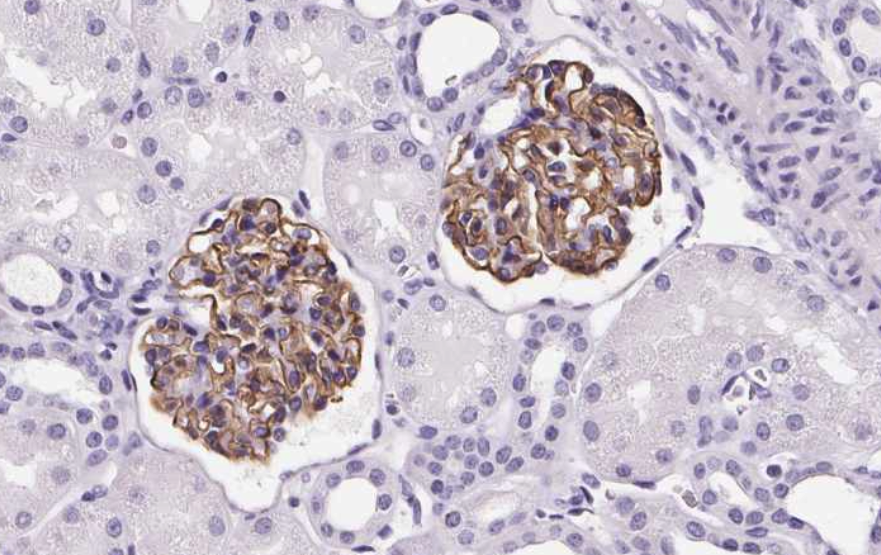
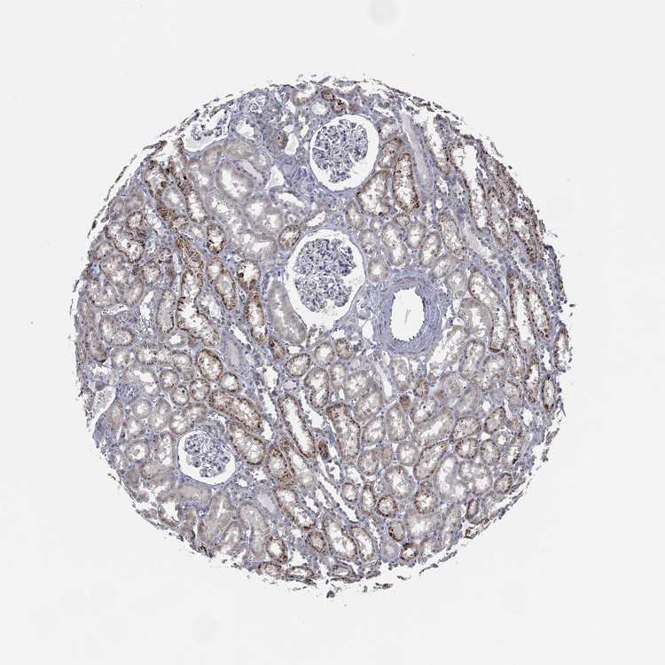

import numpy as np
import pandas as pd
import shutil
from bs4 import BeautifulSoup as BS
import time
from tqdm import tqdm
import requests
from pathlib import Path
from PIL import ImageScraping Images from the Human Protein Atlas
Data Collection
We will be scraping histologic tissue slices from the Human Protein Atlas, which they explicitly allow here.
They provide datasets of available images and respective metadata. I am only interested in largeintestine, kidney, lung, spleen, prostate, preferably without stains.
Here is an (cropped) example:

df = pd.read_csv("https://www.proteinatlas.org/download/normal_tissue.tsv.zip", delimiter="\t")
df.head()| Gene | Gene name | Tissue | Cell type | Level | Reliability | |
|---|---|---|---|---|---|---|
| 0 | ENSG00000000003 | TSPAN6 | adipose tissue | adipocytes | Not detected | Approved |
| 1 | ENSG00000000003 | TSPAN6 | adrenal gland | glandular cells | Not detected | Approved |
| 2 | ENSG00000000003 | TSPAN6 | appendix | glandular cells | Medium | Approved |
| 3 | ENSG00000000003 | TSPAN6 | appendix | lymphoid tissue | Not detected | Approved |
| 4 | ENSG00000000003 | TSPAN6 | bone marrow | hematopoietic cells | Not detected | Approved |
Let’s see which tissues they have images of.
df.Tissue.unique()array(['adipose tissue', 'adrenal gland', 'appendix', 'bone marrow',
'breast', 'bronchus', 'caudate', 'cerebellum', 'cerebral cortex',
'cervix', 'colon', 'duodenum', 'endometrium 1', 'endometrium 2',
'epididymis', 'esophagus', 'fallopian tube', 'gallbladder',
'heart muscle', 'hippocampus', 'kidney', 'liver', 'lung',
'lymph node', 'nasopharynx', 'oral mucosa', 'ovary', 'pancreas',
'parathyroid gland', 'placenta', 'prostate', 'rectum',
'salivary gland', 'seminal vesicle', 'skeletal muscle', 'skin 1',
'skin 2', 'small intestine', 'smooth muscle', 'soft tissue 1',
'soft tissue 2', 'spleen', 'stomach 1', 'stomach 2', 'testis',
'thyroid gland', 'tonsil', 'urinary bladder', 'vagina', nan,
'hypothalamus', 'endometrium', 'hair', 'retina',
'lactating breast', 'skin', 'thymus', 'cartilage', 'eye',
'pituitary gland', 'choroid plexus', 'dorsal raphe',
'substantia nigra', 'sole of foot'], dtype=object)Every tissue I am interest in is present! (Colon = large Intestine) Let’s get rid of everything else.
tissues = set("colon kidney lung prostate spleen".split())
mask = df.Tissue.isin(tissues)
df = df[mask]
df.Tissue.unique()array(['colon', 'kidney', 'lung', 'prostate', 'spleen'], dtype=object)All images have been stained with some antibody, but we actually don’t want stained images. That’s why we’re only keeping those images in which no antigen has been detected (meaning no visible stain is present in these images).
df = df[df.Level == "Not detected"]
df.Level.unique()array(['Not detected'], dtype=object)df.head()| Gene | Gene name | Tissue | Cell type | Level | Reliability | |
|---|---|---|---|---|---|---|
| 20 | ENSG00000000003 | TSPAN6 | colon | endothelial cells | Not detected | Approved |
| 22 | ENSG00000000003 | TSPAN6 | colon | peripheral nerve/ganglion | Not detected | Approved |
| 35 | ENSG00000000003 | TSPAN6 | kidney | cells in glomeruli | Not detected | Approved |
| 40 | ENSG00000000003 | TSPAN6 | lung | macrophages | Not detected | Approved |
| 67 | ENSG00000000003 | TSPAN6 | spleen | cells in red pulp | Not detected | Approved |
Cell types and reliability are not relevant in this usecase, so let’s just get rid of those columns. Also, the actual name of the gene is redundant.
del df["Cell type"], df["Reliability"], df["Level"], df["Gene name"]
df| Gene | Tissue | |
|---|---|---|
| 20 | ENSG00000000003 | colon |
| 22 | ENSG00000000003 | colon |
| 35 | ENSG00000000003 | kidney |
| 40 | ENSG00000000003 | lung |
| 67 | ENSG00000000003 | spleen |
| ... | ... | ... |
| 1194410 | ENSG00000288602 | kidney |
| 1194414 | ENSG00000288602 | lung |
| 1194415 | ENSG00000288602 | lung |
| 1194416 | ENSG00000288602 | lung |
| 1194457 | ENSG00000288602 | spleen |
67054 rows × 2 columns
Some genes appear multiple times per organ. Let’s remove those duplicates.
df = df.drop_duplicates(subset=["Gene", "Tissue"])
df| Gene | Tissue | |
|---|---|---|
| 20 | ENSG00000000003 | colon |
| 35 | ENSG00000000003 | kidney |
| 40 | ENSG00000000003 | lung |
| 67 | ENSG00000000003 | spleen |
| 196 | ENSG00000000457 | lung |
| ... | ... | ... |
| 1194296 | ENSG00000288558 | lung |
| 1194388 | ENSG00000288602 | colon |
| 1194410 | ENSG00000288602 | kidney |
| 1194414 | ENSG00000288602 | lung |
| 1194457 | ENSG00000288602 | spleen |
37915 rows × 2 columns
Now, how many genes per organ do we get?
df.groupby("Tissue").count()| Gene | |
|---|---|
| Tissue | |
| colon | 7338 |
| kidney | 7732 |
| lung | 8747 |
| prostate | 5174 |
| spleen | 8924 |
To many to just download all at once, so we will randomly select 25 of each tissue. Since many genes have been more than one image, we will and up which 2-3 times as many images.
rand_indices = []
for t in df.Tissue.unique():
rand_idx = list(np.random.choice(df[df.Tissue==t].index, size=25))
rand_indices = [*rand_indices, *rand_idx]
df = df.loc[rand_indices]
df.groupby("Tissue").count()| Gene | |
|---|---|
| Tissue | |
| colon | 25 |
| kidney | 25 |
| lung | 25 |
| prostate | 25 |
| spleen | 25 |
Now, we need to build the URL’s of those images. Most genes have multiple images so we are going to expand our dataset with links to every image of every gene.
def build_url(embl, tissue): return f"https://www.proteinatlas.org/{embl}/tissue/{tissue}"
def extract_image_urls(htext):
soup = BS(htext)
image_urls = soup.body.findAll("img")
image_urls = [il.get_attribute_list("src")[0] for il in image_urls]
image_urls = [il for il in image_urls if "proteinatlas" in il]
image_urls = ["https:"+im_url for im_url in image_urls]
return image_urlsurls = []
for gene, tissue in tqdm(list(zip(df.Gene.values, df.Tissue.values))):
url = build_url(gene, tissue)
r = requests.get(url)
if r.status_code != 200:
print(f"Url: {url} didn't work")
urls.append(None)
continue
urls.append(";".join(extract_image_urls(r.text)))
time.sleep(0.1)
df["urls"] = urls100%|██████████| 125/125 [01:39<00:00, 1.25it/s]We save the data, so that we don’t have to run this code twice.
df.to_csv("protein_atlas_scrape.csv", index=False)And finally, we download the images.
def download_image(image_url, filename):
try:
r = requests.get(image_url, stream=True)
if r.status_code == 200:
r.raw.decode_content = True
with open(filename,'wb') as f: shutil.copyfileobj(r.raw, f)
else: return
except: returnDOWNLOAD_DIR = Path("images")
DOWNLOAD_DIR.mkdir(exist_ok=True)
for _,row in tqdm(df.iterrows(), total=len(df)):
for i, url in enumerate(row.urls.split(";")):
image_name = DOWNLOAD_DIR/f"{row.Gene}_{row.Tissue}_{i}.jpg"
download_image(url, image_name)
time.sleep(0.1)100%|██████████| 125/125 [03:17<00:00, 1.58s/it]len(list(Path("images").iterdir()))506Now we have 506 images! Let’s look at a random one.
image_file = np.random.choice(list(Path("images").iterdir()))
Image.open(image_file)
And there we go! We now have histologic images we can use for anything we like.